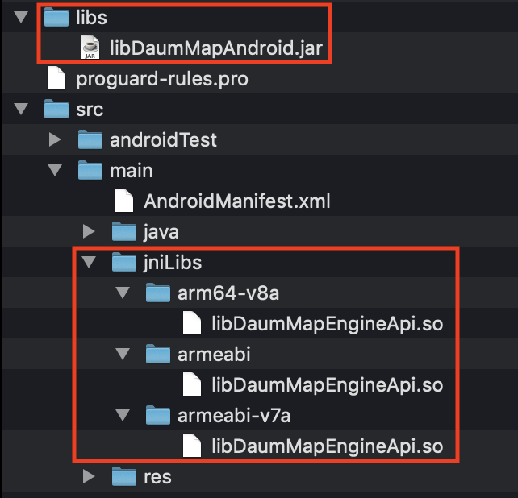
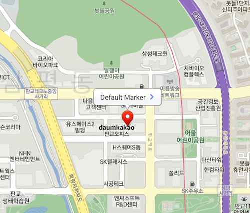
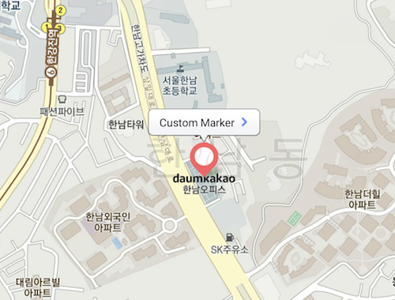
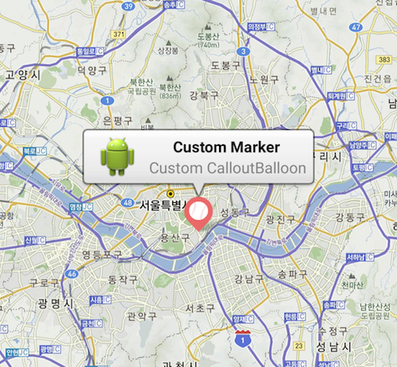
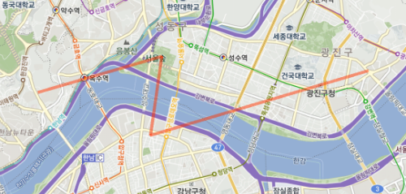
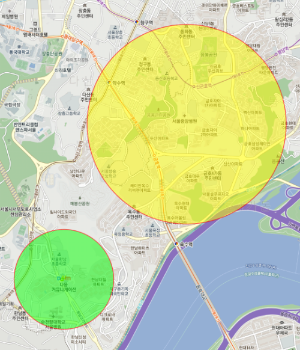

안드로이드앱 개발시 Kakao 지도 Android API 를 이용해 Kakao 지도를 사용할 수 있습니다.
(지원 사양 Android 2.1(API Level 7) 이상)
Kakao 지도 Android API 를 사용하기 전에 준비해야 할 사항에 대해 설명합니다.
최신 버전 (2019/11/22)
Kakao 지도 Android API 는 앱 키 발급 및 키 해시를 등록해야만 사용 가능합니다.
이를 위해서는 카카오 계정이 필요합니다.
키 해시 등록을 위해서는 아래 과정이 필요합니다.
1. 카카오 개발자사이트 (https://developers.kakao.com) 접속
2. 개발자 등록 및 앱 생성
3. Android 플랫폼 추가: 앱 선택 – [플랫폼] – [Android 플랫폼 등록] – 패키지명(필수) 등록
4. 키 해시 등록: [Android 플랫폼 등록] – 키 해시를 등록합니다.
5. 페이지 상단의 [네이티브 앱 키], 등록한 [패키지명], [키 해시]를 사용합니다.
등록된 키 해시와 일치하는 앱에서만 지도 API를 사용할 수 있기 때문에 반드시 등록해주세요.
왼쪽 메뉴의 열쇠모양 을 클릭하면 내 애플리케이션 로 이동합니다. 아직 키 해시를 등록하지 않았다면 해당 페이지에 접속하여 등록하세요.
Android Kakao Map 라이브러리는 libDaumMapAndroid.jar 와 아키텍쳐별로 libMapEngineApi.so 세개의 바이너리로 구성되어 있습니다.libDaumMapAndroid.jar은 /app/libs/에 복사 그리고 libMapEngineApi.so 파일은 /app/source/main/jniLibs로 아키텍쳐별 디렉토리 하에 복사해 주시면 됩니다.

AndroidManifest.xml 에 Permission 과 APP KEY 추가Permission 추가<uses-permission android:name="android.permission.INTERNET">
</uses-permission>
<uses-permission android:name="android.permission.ACCESS_FINE_LOCATION">
</uses-permission>
APP KEY 추가<meta-data android:name="com.kakao.sdk.AppKey" android:value="XXXXXXXXXXXXXXXXXXXXXXXXXXXX"/>
Kakao 지도 Android API 를 사용하는 코드 예제입니다.
더욱 자세한 내용은 Sample App 을 통해 확인 가능합니다.
net.daum.mf.map.api.MapView 객체를 생성하여 Activity 의 content-view 에 삽입하면 지도화면을 손쉽게 구현할 수 있습니다.
<!-- xml layout -->
<?xml version="1.0" encoding="utf-8"?>
<RelativeLayout xmlns:android="http://schemas.android.com/apk/res/android"
android:orientation="vertical" android:layout_width="match_parent"
android:layout_height="match_parent">
<RelativeLayout
android:id="@+id/map_view"
android:layout_width="match_parent"
android:layout_height="match_parent" />
...
</RelativeLayout>// java code
MapView mapView = new MapView(this);
ViewGroup mapViewContainer = (ViewGroup) findViewById(R.id.map_view);
mapViewContainer.addView(mapView);MapView.MapViewEventListener, MapView.POIItemEventListener, MapView.OpenAPIKeyAuthenticationResultListener 등의 Interface 를 구현해 각 이벤트 발생에 대한 결과를 통보받을 수 있습니다. 각 이벤트에 대한 상세한 내용은 문서 를 참고하세요.
구현한 Interface 객체는 MapView 내 setter 메소드로 등록하면 됩니다.
mapView.setMapViewEventListener(this); // this에 MapView.MapViewEventListener 구현.
mapView.setPOIItemEventListener(this);MapView 클래스가 제공하는 메소드를 이용하여 손쉽게 지도 중심점 과 지도 확대/축소 레벨 을 변경할 수 있습니다.
// 중심점 변경
mapView.setMapCenterPoint(MapPoint.mapPointWithGeoCoord(37.53737528, 127.00557633), true);
// 줌 레벨 변경
mapView.setZoomLevel(7, true);
// 중심점 변경 + 줌 레벨 변경
mapView.setMapCenterPointAndZoomLevel(MapPoint.mapPointWithGeoCoord(33.41, 126.52), 9, true);
// 줌 인
mapView.zoomIn(true);
// 줌 아웃
mapView.zoomOut(true);지도뷰 위에 올라가는 마커를 생성할 수 있습니다.
다음지도에서 제공하는 기본 마커 외 커스텀 마커도 올릴 수 있습니다.
마커 관련 이벤트는 MapView.POIItemEventListener Interface를 구현함으로써 감지 가능합니다.

MapPOIItem marker = new MapPOIItem();
marker.setItemName("Default Marker");
marker.setTag(0);
marker.setMapPoint(MARKER_POINT);
marker.setMarkerType(MapPOIItem.MarkerType.BluePin); // 기본으로 제공하는 BluePin 마커 모양.
marker.setSelectedMarkerType(MapPOIItem.MarkerType.RedPin); // 마커를 클릭했을때, 기본으로 제공하는 RedPin 마커 모양.
mapView.addPOIItem(marker);
MapPOIItem customMarker = new MapPOIItem();
customMarker.setItemName("Custom Marker");
customMarker.setTag(1);
customMarker.setMapPoint(MARKER_POINT);
customMarker.setMarkerType(MapPOIItem.MarkerType.CustomImage); // 마커타입을 커스텀 마커로 지정.
customMarker.setCustomImageResourceId(R.drawable.custom_marker_red); // 마커 이미지.
customMarker.setCustomImageAutoscale(false); // hdpi, xhdpi 등 안드로이드 플랫폼의 스케일을 사용할 경우 지도 라이브러리의 스케일 기능을 꺼줌.
customMarker.setCustomImageAnchor(0.5f, 1.0f); // 마커 이미지중 기준이 되는 위치(앵커포인트) 지정 - 마커 이미지 좌측 상단 기준 x(0.0f ~ 1.0f), y(0.0f ~ 1.0f) 값.
mapView.addPOIItem(customMarker);
// CalloutBalloonAdapter 인터페이스 구현
class CustomCalloutBalloonAdapter implements CalloutBalloonAdapter {
private final View mCalloutBalloon;
public CustomCalloutBalloonAdapter() {
mCalloutBalloon = getLayoutInflater().inflate(R.layout.custom_callout_balloon, null);
}
@Override
public View getCalloutBalloon(MapPOIItem poiItem) {
((ImageView) mCalloutBalloon.findViewById(R.id.badge)).setImageResource(R.drawable.ic_launcher);
((TextView) mCalloutBalloon.findViewById(R.id.title)).setText(poiItem.getItemName());
((TextView) mCalloutBalloon.findViewById(R.id.desc)).setText("Custom CalloutBalloon");
return mCalloutBalloon;
}
@Override
public View getPressedCalloutBalloon(MapPOIItem poiItem) {
return null;
}
}
@Override
protected void onCreate(Bundle savedInstanceState) {
...
// 구현한 CalloutBalloonAdapter 등록
mMapView.setCalloutBalloonAdapter(new CustomCalloutBalloonAdapter());
...
}지도뷰 위에 Polyline 과 Circle 을 그릴 수 있습니다.

MapPolyline polyline = new MapPolyline();
polyline.setTag(1000);
polyline.setLineColor(Color.argb(128, 255, 51, 0)); // Polyline 컬러 지정.
// Polyline 좌표 지정.
polyline.addPoint(MapPoint.mapPointWithGeoCoord(37.537229, 127.005515));
polyline.addPoint(MapPoint.mapPointWithGeoCoord(37.545024,127.03923));
polyline.addPoint(MapPoint.mapPointWithGeoCoord(37.527896,127.036245));
polyline.addPoint(MapPoint.mapPointWithGeoCoord(37.541889,127.095388));
// Polyline 지도에 올리기.
mapView.addPolyline(polyline);
// 지도뷰의 중심좌표와 줌레벨을 Polyline이 모두 나오도록 조정.
MapPointBounds mapPointBounds = new MapPointBounds(polyline.getMapPoints());
int padding = 100; // px
mMapView.moveCamera(CameraUpdateFactory.newMapPointBounds(mapPointBounds, padding));
MapCircle circle1 = new MapCircle(
MapPoint.mapPointWithGeoCoord(37.537094, 127.005470), // center
500, // radius
Color.argb(128, 255, 0, 0), // strokeColor
Color.argb(128, 0, 255, 0) // fillColor
);
circle1.setTag(1234);
mMapView.addCircle(circle1);
MapCircle circle2 = new MapCircle(
MapPoint.mapPointWithGeoCoord(37.551094, 127.019470), // center
1000, // radius
Color.argb(128, 255, 0, 0), // strokeColor
Color.argb(128, 255, 255, 0) // fillColor
);
circle2.setTag(5678);
mMapView.addCircle(circle2);
// 지도뷰의 중심좌표와 줌레벨을 Circle이 모두 나오도록 조정.
MapPointBounds[] mapPointBoundsArray = { circle1.getBound(), circle2.getBound() };
MapPointBounds mapPointBounds = new MapPointBounds(mapPointBoundsArray);
int padding = 50; // px
mMapView.moveCamera(CameraUpdateFactory.newMapPointBounds(mapPointBounds, padding));MapReverseGeoCoder 클래스를 이용하여 지도 좌표로 주소 정보를 가져올 수 있습니다.
MapReverseGeoCoder reverseGeoCoder = new MapReverseGeoCoder("LOCAL_API_KEY", mapPoint, reverseGeoCodingResultListener, contextActivity);
reverseGeoCoder.startFindingAddress();
...
// reverseGeoCodingResultListener
@Override
public void onReverseGeoCoderFoundAddress(MapReverseGeoCoder mapReverseGeoCoder, String addressString) {
// 주소를 찾은 경우.
}
@Override
public void onReverseGeoCoderFailedToFindAddress(MapReverseGeoCoder mapReverseGeoCoder) {
// 호출에 실패한 경우.
}개발중인 App or Web 에서 Kakao 지도앱으로 연결하고 싶으신 경우에는 다음과 같은 URL Scheme을 이용하시면 됩니다.
| 지도앱 버전 | OS 버전 | URL Scheme | 설명 |
|---|---|---|---|
| 모든버전 | 1.6 + | kakaomap://open | 지도앱을 실행합니다. |
| 3.8.0 + | 1.6 + | kakaomap://open?page=placeSearch | 지도앱을 실행하고 장소 검색 입력 화면 을 보여줍니다. |
| 3.8.0 + | 1.6 + | kakaomap://open?page=routeSearch | 지도앱을 실행하고 길찾기 입력 화면 을 보여줍니다. |
| 지도앱 버전 | OS 버전 | URL Scheme | 설명 |
|---|---|---|---|
| 모든버전 | 1.6 + | kakaomap://look?p=37.537229,127.005515 | 지도앱을 실행하고 지정된 좌표 중심으로 지도를 보여주고 마커를 표시합니다. |
| 지도앱 버전 | OS 버전 | URL Scheme | 설명 |
|---|---|---|---|
| 모든버전 | 1.6 + | kakaomap://place?id=7813422 | 지도앱을 실행하고 지정(장소ID)된 장소를 중심으로 지도를 보여주고 마커를 표시합니다. |
| 지도앱 버전 | OS 버전 | URL Scheme | 설명 |
|---|---|---|---|
| 모든버전 | 1.6 + | kakaomap://search?q=맛집&p=37.537229,127.005515 | 지도앱을 실행하고 지정된 좌표(WGS84) 중심으로 검색합니다. |
| 지도앱 버전 | OS 버전 | URL Scheme | 설명 |
|---|---|---|---|
| 모든버전 | 1.6 + | kakaomap://route?sp=37.537229,127.005515&ep=37.4979502,127.0276368&by=CAR | 지도앱을 실행하고 출발지 좌표(WGS84)부터 도착지 좌표(WGS84)까지 자동차 길찾기합니다. |
| 모든버전 | 1.6 + | kakaomap://route?sp=37.537229,127.005515&ep=37.4979502,127.0276368&by=PUBLICTRANSIT | 지도앱을 실행하고 출발지 좌표(WGS84)부터 도착지 좌표(WGS84)까지 대중교통 길찾기합니다. |
| 모든버전 | 1.6 + | kakaomap://route?sp=37.537229,127.005515&ep=37.4979502,127.0276368&by=FOOT | 지도앱을 실행하고 출발지 좌표(WGS84)부터 도착지 좌표(WGS84)까지 도보 길찾기합니다. |
| 지도앱 버전 | OS 버전 | URL Scheme | 설명 |
|---|---|---|---|
| 모든버전 | 1.6 + | kakaomap://roadView?p=37.537229,127.005515 | 지도앱을 실행하고 지정된 좌표(WGS84)의 로드뷰 마커 를 보여줍니다. |
geo:37.537229,127.005515
geo:0,0?q=서울+용산구+이태원로+179
Kakao 지도 Android API 를 시작하는 방법과 기능에 대해 간략하게 소개해 보았습니다. 여러분의 멋진 애플리케이션을 위해서 더 자세한 API의 기능들을 살펴보세요.